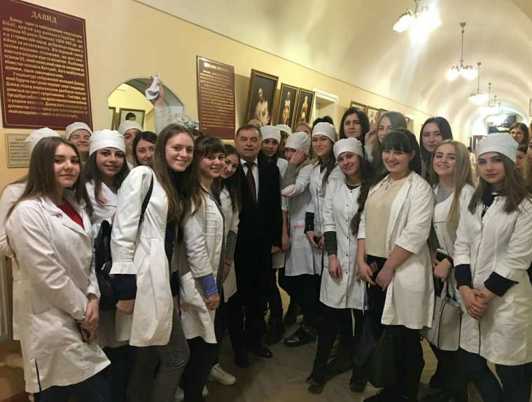
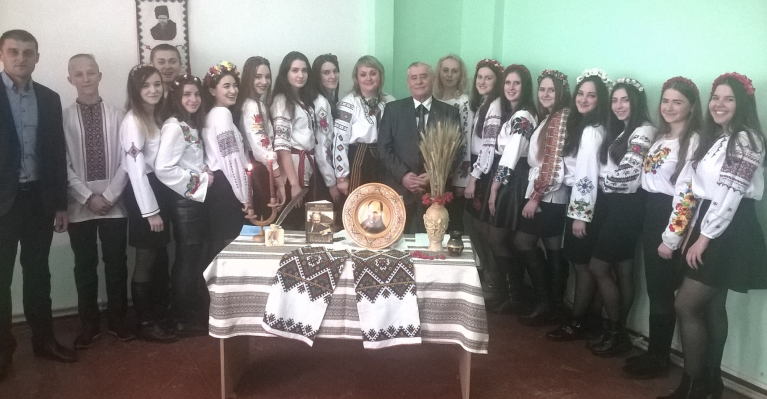
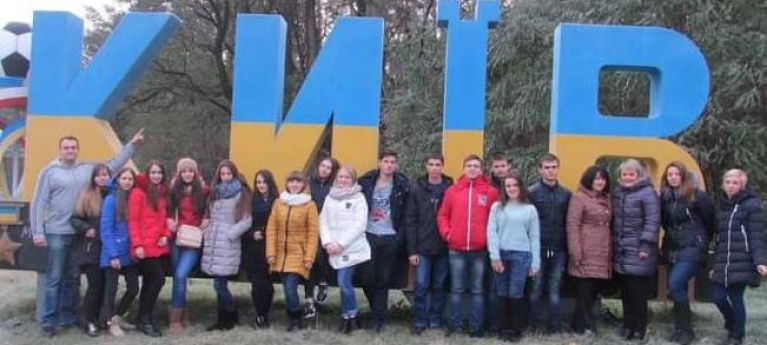
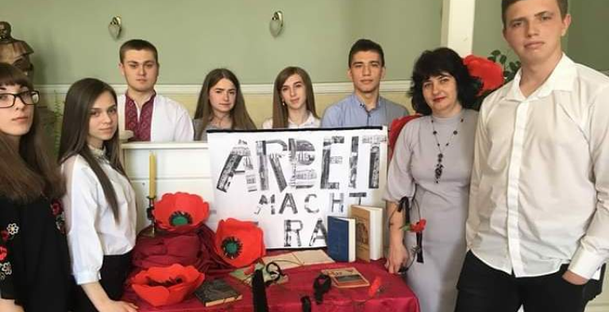

Про нас
Історія створення
Історію фахового медичного коледжу та молодших спеціалістів в Івано-Франківському національному медичному університеті (ІФНМУ) можна відраховувати з 1996 року. Ректор Івано-Франківської державної медичної академії (нині ІФНМУ) академік Нейко Євген Михайлович так пише міністру освіти України Згуровському М.З.: «…В даний час лікувально-профілактичні заклади Івано-Франківської, Чернівецької, Рівненської областей мають велику потребу в кваліфікованих спеціалістах – зубних техніках… ІФДМА має великий досвід викладання, на відповідних кафедрах працюють висококваліфіковані спеціалісти, а кафедри мають сучасну матеріально-технічну базу…» (лист від 06.11.1996 року № 426-04/1587). Вже перший набір студентів на ці спеціальності відбувся 1997 року, а перший випуск фахівців за спеціальністю „Сестринська справа” та "Стоматологія ортопедична" відбувся 1999 році. Це були спеціальності при медичному та стоматологічному факультетах. Відповідно, першими керівниками, відповідальними за навчальний процес в молодших спеціалістів були заступники деканів. На медичному факультеті справами медичних сестер займались Сарапук І.В., Звонар П.П., а на стоматологічному: Кріль А.Й., Павлюк А.М., Обідняк В.З., Бугерчук О.В., Ананевич О.В., Сухолиткий В.М., Костишин А.Б. Розпочиналось все доволі скромно – по одній групі кожної спеціальності. Ліцензований обсяг для спеціальності «Сестринська справа» становив 60 осіб, а зі спеціальності «Стоматологія ортопедична» – 30 осіб. Проте, за короткий відтинок часу – в 2000 році маємо клопотання ректора ІФДМА акад. Нейка Є.М. до Міністра освіти і науки України Креміня В.Г. про продовження терміну дії ліцензії ВПД-І №095866 зі спеціальності 5.110102 «Сестринська справа» до 2004 року та збільшенням студентів до 150 осіб, а зубних техніків – до 60 осіб. І вже медичних сестер було 5 груп, зубних техніків – 2. Підготовка здійснювалась і на базі 11 класів, і на базі 9 класів. Тому і виникла потреба в реорганізації молодших спеціалістів в окремий структурний підрозділ. Цей процес розпочав ректор акад. Нейко Є.М., але логічне завершення цього процесу здійснив ректор ІФНМУ проф. Рожко М.М..
Медичний коледж як структурний підрозділ ІФНМУ був створений відповідно до наказу ректора №415-д від 20.12.2004.
Розширення та розвиток
Павло Павлович Звонар
З 2010 року розпочата підготовка спеціалістів за спеціальністю “Лікувальна справа” – ліцензований обсяг 60 осіб, з 2012 року – за спеціальністю “Фармація” – 60 осіб. Так, в 2014 в коледжі вже навчалося 1238 студентів, що підтверджувало потребу та попит в молодших спеціалістах серед лікувальних закладах краю. В 2014 та 2020 роках колледж успішно пройшов акредитацію за всіма Збільшення кількості студентів в коледжі змусило керівництво ІФНМУ розширювати навчальну базу університету. Тому прийнято рішення вивчення загальноосвітніх дисциплін з 2013 року проводити на базі загальноосвітнього навчального корпусу по вул. Галицька, 201, з 2020 року по вул.. Бандери,77, а базові медичні та клінічні дисципліни викладати на кафедрах університету. Навчання в коледжі проводиться за двома формами – за державним замовленням та за рахунок коштів фізичних та юридичних осіб (контрактна форма навчання).Звичайно, без кадрового потенціалу реалізувати медичний коледж було б неможливо. Першим директором медичного коледжу став доц. кафедри внутрішньої медицини №2 Павло Павлович Звонар, з 2012 року – доцент цієї ж кафедри Юрій Володимирович Боцюрко.
Юрій Володимирович Боцюрко
Коледж в наш час
В цей час створені структурні підрозділи та призначені їхні керівники: загальноосвітнє відділення на чолі з завідувачем відділення доцентом кафедри мовознавства Мельничук О. М., сестринсько-фельдшерське відділення – завідувач асистент кафедри внутрішньої медицини №3 та медсестринства Гвоздецька Г.С., зуботехнічно-фармацевтичне відділення – завідувач асистент кафедри ортопедичної стоматології Сухолиткий В.М. Заступниками директора: з навчальної роботи призначено асистента кафедри біофізики Шулепу Світлану Георгіївну; заступником з виховної роботи – асистента кафедри мовознавства Кофлера Дениса Фрідріховича, з 2014 року Левандовського Володимира Михайловича (викладач кафедри українознавства). Дещо пізніше відбулась корекція в структуруванні коледжу. Розділені сестринське та фельдшерське відділення, завідувачем фельдшерського стала асистент кафедри внутрішньої медицини №2 з курсом медсестринства Чернюк Г. Д., виокремлено фармацевтичне відділення на чолі з асистентом кафедри організації та економіки фармації і технології ліків Сініченко А.В.
Вже після утвердження коледжу як такого, маємо нові виклики. «Для нас на чільному місці – студентство, - заявляє ректор Рожко М.М., - гуртожитки, харчування студентства – ці питання для нас завжди на першому місці». Тому студенти коледжу повною мірою користуються всіма ресурсами університету.
Теперішній директор коледжу
Бульбук Олександр Іванович
2020 року директором фахового медичного коледжу призначено доц. кафедри ортопедичної стоматології Бульбука Олександра Івановича. Завідувачі відділень: зуботехнічного – Геник Богдан Любомирович, сестринського – Гвоздецька Галина Сергіївна, фельдшерського – Глов’як Віталій Григорович, фармацевтичного – Водославський Василь Мирославович. Загалом, в коледжі викладають 199 педагогічних працівників. Навчальний процес забезпечують викладачі 35 кафедр університету, серед яких є 57 кандидатів наук.
Дозвілля та наші досягнення
На сьогодні проводиться підготовка спеціалістів за такими напрямами:
- Cпеціальність 221 «Стоматологія ортопедична» на основі базової та повної загальної середньої освіти. Термін навчання – 2 роки на основі повної середньої освіти, 3 роки – на основі базової середньої освіти.
- Cпеціальність 223 «Медсестринство» на основі базової та повної загальної середньої освіти. Термін навчання – 3 роки на основі повної середньої освіти, 4 роки – на основі базової середньої освіти.
- Cпеціальність 223 «Медсестринство», ОПП «Лікувальна справа» на основі базової загальної середньої освіти. Термін навчання – 4 роки.
- Cпеціальність 226 «Фармація» на основі базової середньої освіти. Термін навчання – 3 роки.
В коледжі працює 5 циклових методичних комісій, є всі необхідні навчально-методичні матеріали. Студенти коледжу повністю забезпечені україномовними підручниками, успішно користуються електронними можливостями сайту університету, є членами загальноуніверситетського студентського парламенту.
За короткий час фаховий медичний коледж ІФНМУ увійшов в число кращих фахових навчальних закладів області. Студенти є неодноразовими призерами обласних предметних олімпіад, всеукраїнських конкурсів. Так, наприклад, студентки Лукаш Тетяна та Плешкан Іванна під керівництвом викладачки кафедри мовознавства Р.С. Сеньків 2018 та 2019 роках відповідно стали переможницями всеукраїнського конкурсу ім. П.Яцика.
Є спортивні здобутки в гирьовому спорті, футболі, боротьбі та ін.. Так, наприклад, першокурсниця фахового медичного коледжу, 15-річна Христина Макота попри зовсім невеликий термін занять гирьовим спортом вже вписала своє ім’я в історію університету. Вона стала першим студентом коледжу, яка взяла участь у гирьовому чемпіонаті України та 2017 року здобула перемогу — золоту медаль у kettlebell hold (до 65кг).
Дирекція медичного коледжу сприяє дозвіллю в позанавчальний час – творчі зустрічі з відомими культурницькими діячами краю, учасниками АТО (ООС), проведення благодійних ярмарків, кошти з яких використовували для закупівлі медикаментів, продуктів харчування, одягу сиротам, українським воякам тощо.
За період існування коледжу дирекцією організовано близько пів сотні екскурсій пам’ятними місцями України: Луцьк, Львів, Хотин, Камянець-Подільський, Мукачево, Ужгород, а 2016 року за участь в художній самодіяльності перша проректора ІФНМУ проф. Ганна Ерстенюк посприяла екскурсії в столицю України – Київ, що викликало неабиякий захват та стимул до навчання.
 Туристичні походи на г.Говерла, Піп Іван, Манявський водоспад, грязевий вулкан в с.Старуня – було неабияким випробовуванням і для студентів, і для викладачів; організовано перегляд кількох десятків вистав в Івано-Франківському обласному музично-драматичному академічному театрі ім. Івана-Франка, Івано-Франківській філармонії, українських художніх стрічок в кінотеатрах тощо.
Викладачі фахового медичного коледжу є учасниками обласних методичних об’єднань, на яких відбувається обмін досвідом навчально-методичного процесу. Навчальний заклад і надалі розвивається, забезпечує кадрову потребу регіону медичними працівниками, фармацевтами, зубними техніками. Випускники також мають можливість продовжити навчальну і наукову роботу в стінах Івано-Франківського національного медичного університету. «Чимало структурних підрозділів в університеті займаються освітнім процесом, – говорить перша проректора ІФНМУ проф.Ганна Ерстенюк. – І для нас важливо отримати підтвердження внутрішніх та зовнішніх аудитів про те, що рухаємось у правильному напрямку. Наше завдання працювати тільки на хороший результат»!